All My Life — K-Ci & JoJo
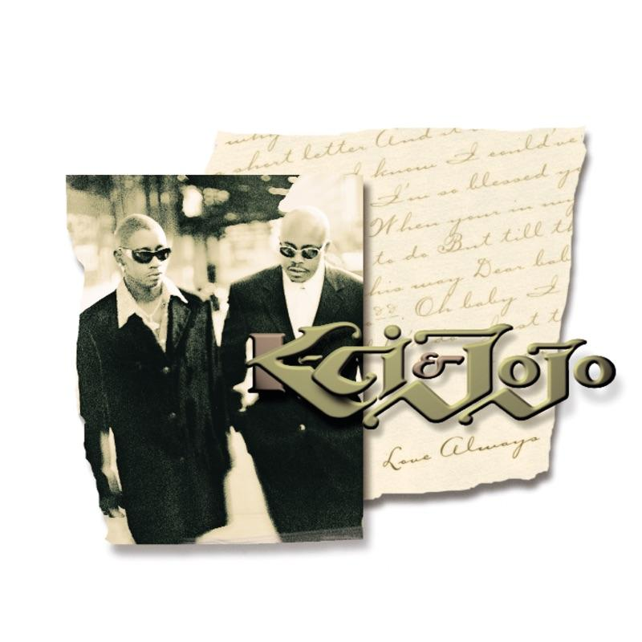
Short lyric : “All my life (all my life) They been tryin' to keep me down (they been tryin' to keep me down)…”
Published date : 17/06/1997
Production company : MCA Records

Short lyric : “All my life (all my life) They been tryin' to keep me down (they been tryin' to keep me down)…”
Published date : 17/06/1997
Production company : MCA Records
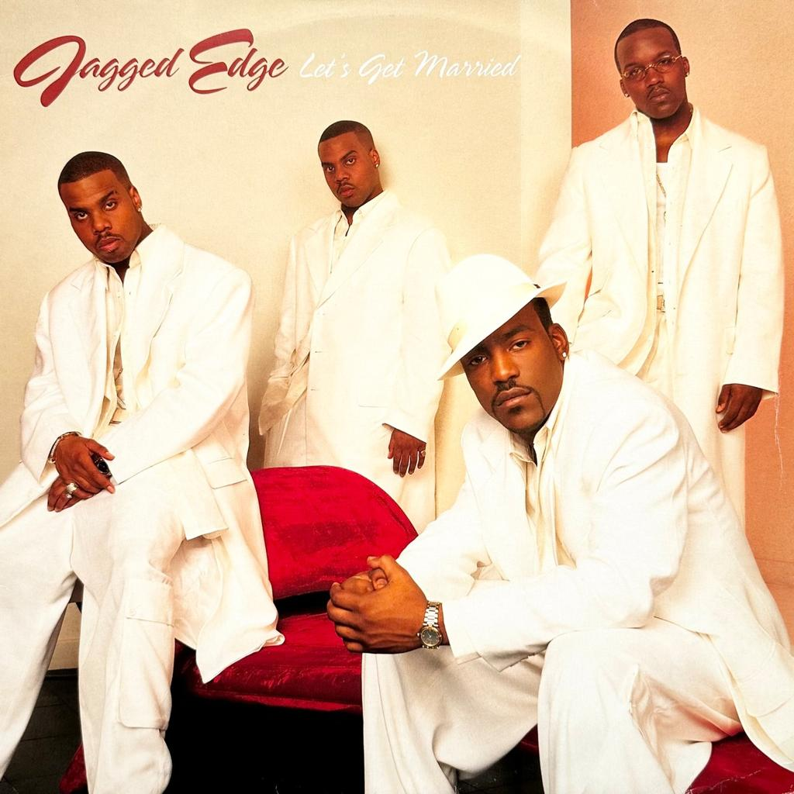
Short lyric : “Meet me at the altar in your white dress
We ain't gettin' no younger, we might as well do it (we ain't gettin' no younger, girl)…”
Published date : 24/08/1999
Production company : So So Def Recordings
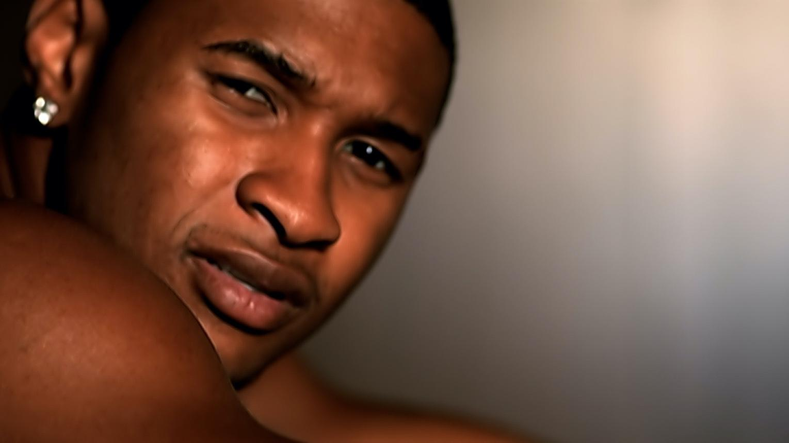
Short lyric : “You got it, you got it bad When you're on the phone…”
Published date : 04/09/2001
Production company : Arista Records
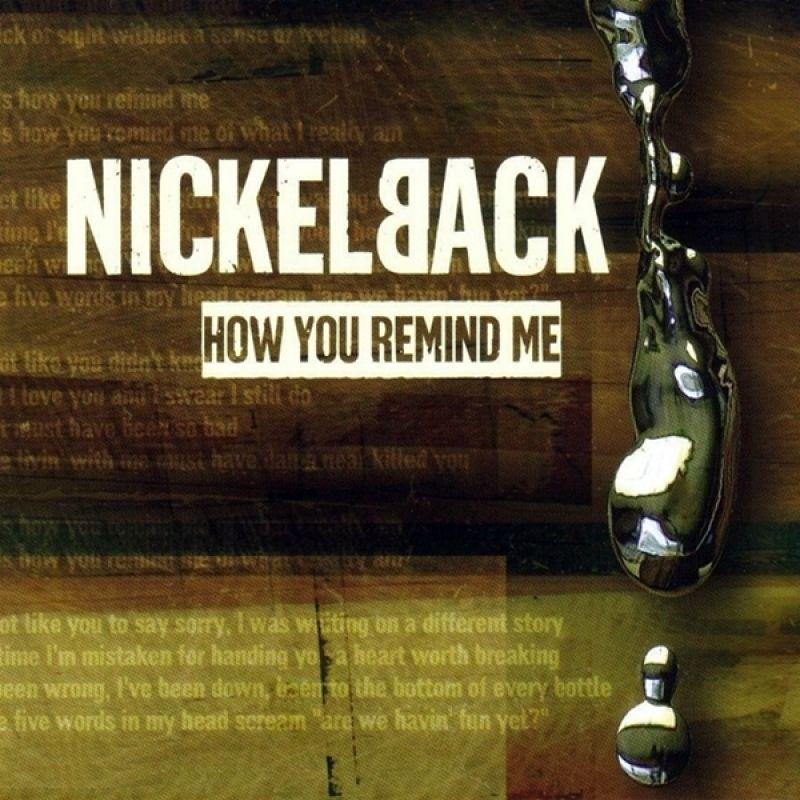
Short lyric : “This is how you remind me Of what I really am This is how you remind me Of what I really am…”
Published date : 21/08/2001
Production company : Roadrunner Records
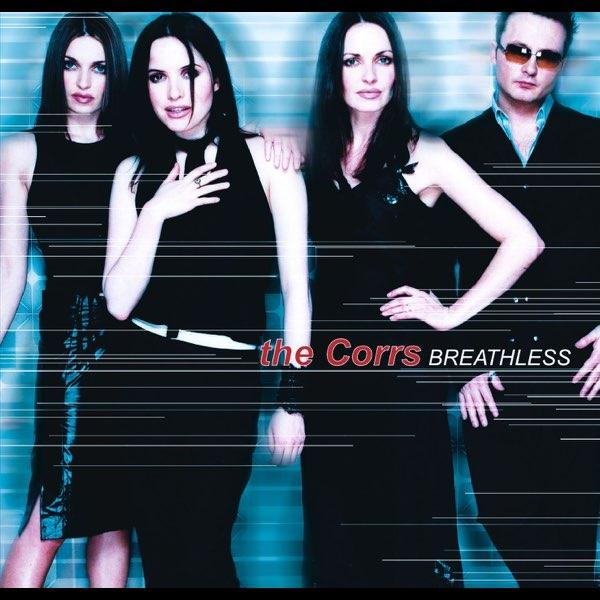
Short lyric: “The daylight's fading slowly But time with you is standing still I'm waiting for you only The slightest touch and I feel weak …”
Published date: 06/11/2000
Production company : Atlantic Records
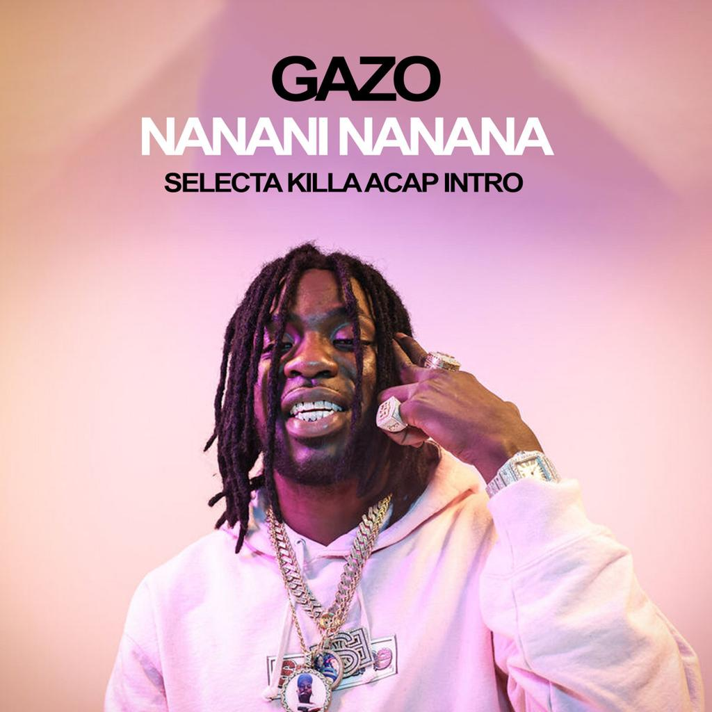
Short lyric : “J'suis bloqué dans sa tête
C'est moi contre elle en un contre un
Mon partenaire d'enfer
C'est top secret, c'est sous contrat
J'suis confiant, si ça pète
C'est sûr que personne racontera
Elle est as-p dans les nanani, naninana…”
Published date : 29 novembre 2024
Production company : BSB Prod / Sony Music Entertainment
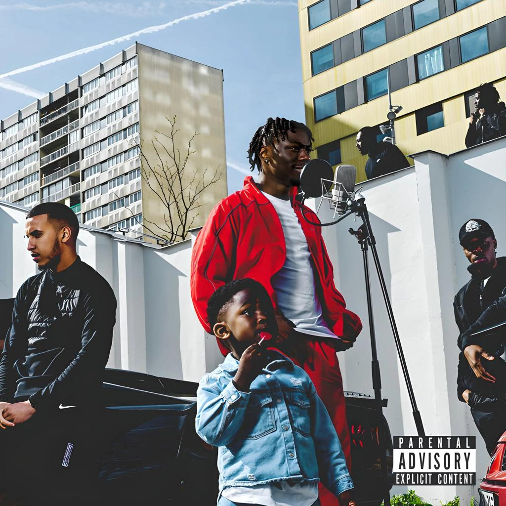
Short lyric: “T.I.A.K et O riment avec la mélo'
Comme un goat, j'me comporte, qui j'dois éliminer?
C'est avec des scoops qu'ils font des scores, bienvenue dans l'milieu
J'commence en scoot', plus d'place au doute, j'finis en Sportback…”
Published date: 25 juillet 2024
Production company : M3lo World
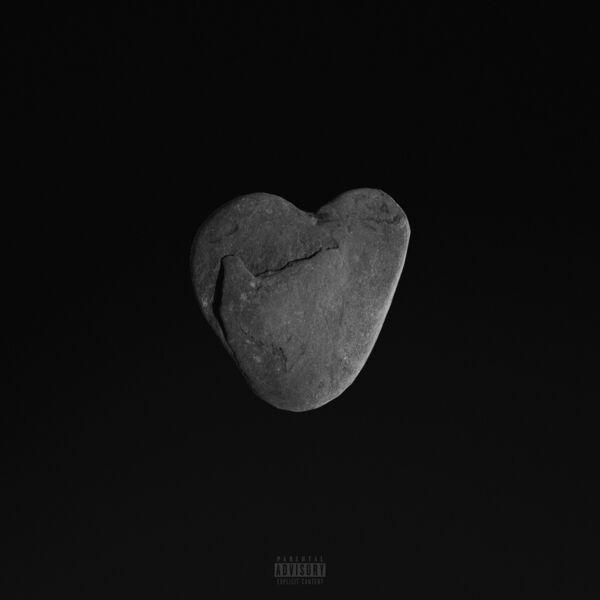
Short lyric : “Yeah, yo, les mecs m'ont dit
"Dams faut qu'tu rentres t'es pété"
J'leur ai dit "Nan j'suis pas pété
Bah nan j'ai juste bu quelques verres vite fait"…”
Published date : 28 avril 2017
Production company : Capitol Music France, Universal Music France,92i
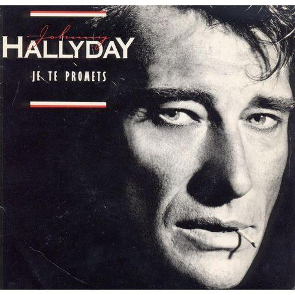
Short lyric : “Je te promets le sel
Au baiser de ma bouche
Je te promets le miel
À ma main qui te touche
Je te promets le ciel
Au-dessus de ta couche
Des fleurs et des dentelles
Pour que tes nuits soient douces…”
Published date : 1986
Production company : Philips
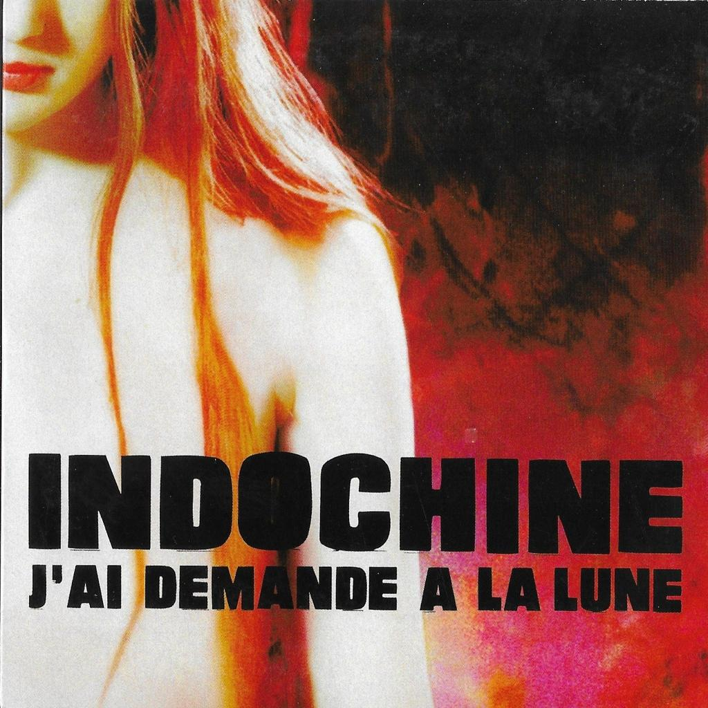
Short lyric: “J'ai demandé à la lune
Si tu voulais encore de moi
Elle m'a dit "j'ai pas l'habitude"
"De m'occuper des cas comme ça"…”
Published date: 2002
Production company : Columbia Records / Sony Music
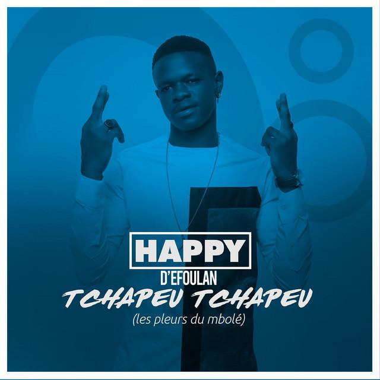
Short lyric : “Le jour du Mbolé, les larmes vont couler
Le jour du Mbolé, ayaya les pleurs oh
Hoooooo hooooo… les larmes vont couler
Hooooo hooooo… les larmes vont couler…”
Published date : 3 décembre 2020
Production company : Nsalen Productions
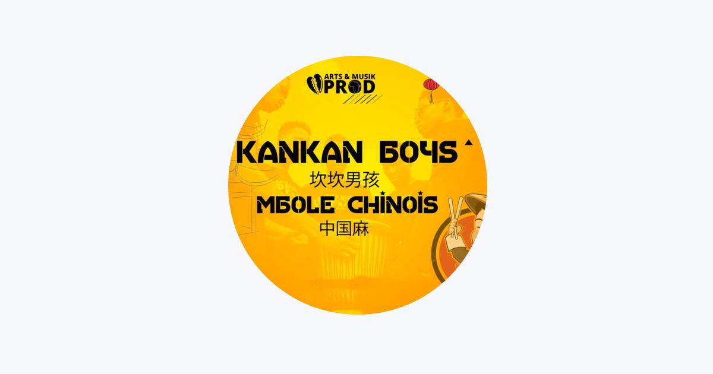
Short lyric: ////
Published date: 26 Décembre 2025
Production company : Kankan Boys
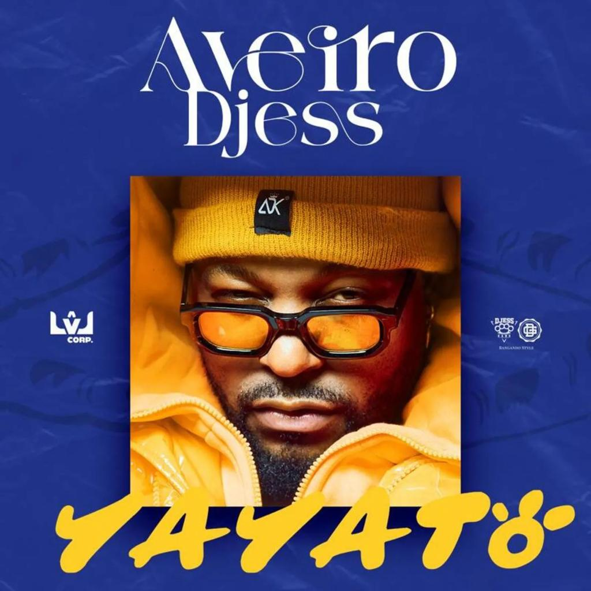
Short lyric : “Numero 10 C'est moi qui Dasham la melo
Je vends Je perds Je donne tout cadeau cadeau
Les banger nous on envoie ça chaque année…”
Published date : 18 juillet 2025
Production company : LVL UP CORP, DjessGang Family Recordz
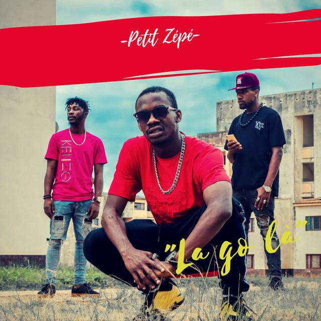
Short lyric : “J'avais perdu papa, j'ai aussi perdu ma maman
Dans la rue, il fallait se battre dur pour assurer son avenir…”
Published date : 5 avril 2026.
Production company : Medelin Production
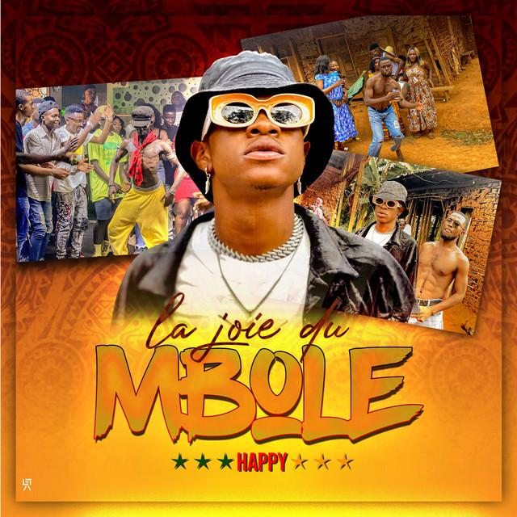
Short lyric: “Bonne année x6 Si tu es vivant ooooh c'est grâce à Yahwé…”
Published date: 29 décembre 2025
Production company : One Peace Dance Academy